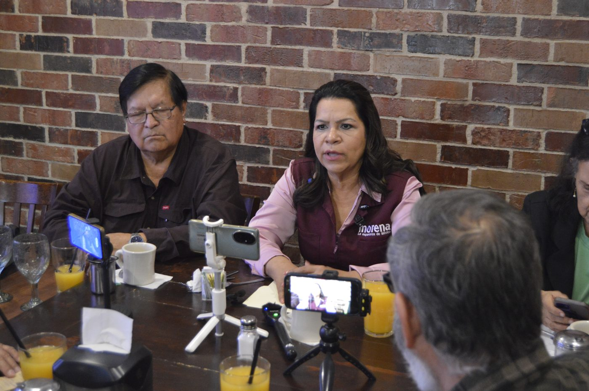

Eva Rodríguez durante el desayuno con la Unión de Periodistas Democráticos.
Eva Rodríguez, aspirante a la Coordinación Municipal de los Comités de Defensa de la Transformación en Mexicali, se reunió la mañana de este miércoles 11 de noviembre con integrantes de la Unión de Periodistas Democráticos, ante quienes presentó su trayectoria y las tres prioridades que, dijo, ha recogido en más de un año de recorridos por las secciones de la ciudad.
La primera son las calles, el tema que más le plantean los vecinos en sus asambleas. Para Eva Rodríguez, se trata de que haya piso parejo para todas las colonias: que la calle de cada familia reciba la misma atención, sin importar el rumbo de la ciudad. Es un tema que conoce desde abajo: en 1984 llegó a la colonia Hidalgo cuando todavía era una parcela, sin servicios de ningún tipo, y desde entonces trabaja con los vecinos.
La segunda prioridad es la seguridad desde la prevención, con calles iluminadas y una policía cercana a la gente. «Que la gente se sienta segura cuando sale del trabajo en la noche, o el que tiene necesidad de estudiar por la tarde o noche, que llegue a su casa a gusto, tranquilo», explicó. La tercera es la limpieza, que planteó como una responsabilidad compartida con los vecinos: «La ciudad más limpia no es la que más se limpia, es la que menos ensucia».
Eva Rodríguez relató que llegó a Mexicali a los 17 años desde Los Mochis, Sinaloa. Su primer empleo fue de lavaplatos en el mercado Esteban Cantú y después trabajó en los mercados sobre ruedas, donde los oferentes la eligieron dirigente. A la pregunta de un periodista sobre no haber nacido en la ciudad, respondió que se considera cachanilla por adopción: aquí nacieron sus hijos y sus nietos.
En la ronda de preguntas recordó su paso por el Congreso del Estado. El 5 de mayo de 2020, como diputada, acudió con el auditor del Estado a la Fiscalía General del Estado a presentar una denuncia por un posible quebranto al erario de más de 1,500 millones de pesos relacionado con pagos a un centenar de empresas. Sobre el proceso interno de su partido, dijo que espera la encuesta y que confía en él.
Eva Rodríguez, ex diputada de la XXIII Legislatura de Baja California, suma casi cuatro décadas de trabajo comunitario, que comenzó en los mercados sobre ruedas y en la colonia Hidalgo.
Al cerrar su exposición habló de recuperar la confianza de la ciudadanía, idea que resume en su lema: «Cuando hay confianza, transformamos juntos».